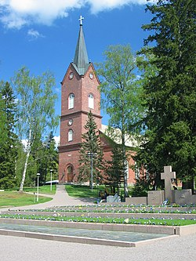

Kotikuntani on Mäntsälä. Mäntsälä on pieni kunta uudenmaan alueella, jossa on noin 20 000 asukasta. Mäntsälä on mainio kesäpaikkakunta. Mäntsälän alueella sijaitsee jopa kolme eri uimarantaa, sekä "Kirsikkapuiston kahvila", jossa aurinkoisesta kesäilmasta on täydellistä nauttia.
Alla on muutamia kuvia Mäntsälän kesäisistä maisemista.
Kuva 2. Saaren uimaranta "Hunttijärvi".